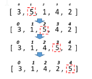

Дано масив 30 випадкових цілих чисел. Підрахувати скільки було обмінів під час сортування бульбашкою.
Дано масив 30 випадкових цілих чисел. Підрахувати скільки було обмінів під час сортування змішуванням.
Дано масив 30 випадкових цілих чисел. Підрахувати скільки було обмінів під час сортування включеннями.
Для розглянутих методів сортування спробувати вивести етапи сортування шляхом виведення відповідних таблиць за зразком.
Дано масив імен. Застосовуючи відповідне сортування та бінарний пошук визначити, чи є у масиві ім’я «Olga» і під яким індексом.
Дано масив імен. Застосовуючи відповідне сортування та бінарний пошук визначити, чи є у масиві ім’я довжиною 5 символів і під яким індексом.